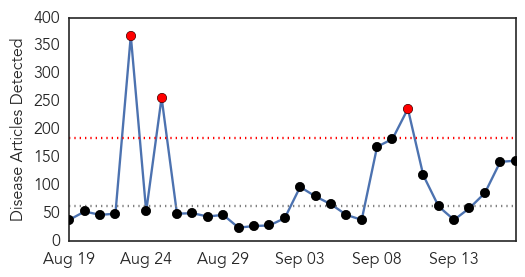
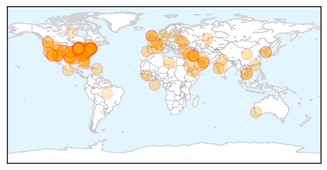
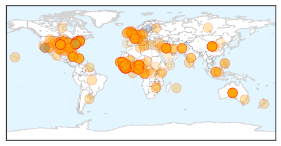

Unknown
30-Day Web Trend
3 alerts, 0 warnings

30-Day Twitter Trend
0 alerts, 0 warnings

Article Locations
Article Confidences
Top Articles:
- 0.999
- No cases of Enterovirus EV-D68 in Durham
- 0.998
- The rare respiratory virus sickening children has been confirmed in 16 states across the country
- 0.998
- Children’s respiratory illness spreads to more states
- 0.997
- Enterovirus may be cause of ill children in Connecticut
- 0.996
- EV-D68 cases hit Philly, hospitals on alert
- 0.996
- Rare respiratory illness spreads to a dozen states
- 0.995
- CDC confirms first N.J. case of rare enterovirus D68
- 0.995
- Respiratory virus enterovirus D68 may be in Westchester
- 0.993
- Enterovirus D68 Prompts Hospital Wards to Ban Child Visitors
- 0.992
- Pennsylvania has 3 confirmed cases of respiratory virus that has spread across Midwest
- 0.991
- Health department confirms first case of enterovirus in Connecticut
- 0.990
- Enterovirus 68: Public health alert as 7 new cases confirmed in Ontario, B.C.
- 0.989
- New respiratory virus coming to Arizona
- 0.987
- ‘Protocols in place’ to deal with three enterovirus cases in B.C.: Minister
- 0.987
- CDC Confirms First Case of EV-D68 in Connecticut Child
- 0.984
- 3 enterovirus cases but don't panic: B.C. minister
- 0.983
- First enterovirus cases confirmed in Pennsylvania
- 0.983
- DPH: One Case Of Enterovirus Confirmed In State
- 0.983
- DPH: One Case Of Enterovirus Confirmed In State
- 0.982
- Possible cases of Enterovirus being investigated at Baystate Med
- 0.981
- Dangerous stomach virus affecting children
- 0.979
- 7 cases of enterovirus confirmed in Ont., B.C.
- 0.979
- Oklahoma Becomes 12th State to Report Enterovirus
- 0.977
- First Virginia cases of enterovirus confirmed
- 0.976
- WAFB 9 News Baton Rouge, Louisiana News, Weather, Sports
- 0.976
- Enterovirus respiratory illness hits 12 states, still spreading
- 0.976
- Enterovirus D68: 3 confirmed cases in B.C.'s Lower Mainland
- 0.968
- Kids' virus may have finally reached Arizona
- 0.963
- Virginia has 7 confirmed cases of rare respiratory illness
- 0.957
- Enterovirus confirmed in New Jersey
- 0.948
- Greater Clark County Schools sends parents letter about Enterovi
- 0.947
- First case of enterovirus D68 confirmed in NYC, NJ, Connecticut
- 0.941
- Rare Respiratory Illness Confirmed in 12 States
- 0.917
- Chicago Tribune
- 0.917
- Chicago Tribune
- 0.917
- Chicago Tribune
- 0.917
- Chicago Tribune
- 0.917
- Chicago Tribune
- 0.917
- Chicago Tribune
- 0.917
- Chicago Tribune
- 0.917
- Chicago Tribune
- 0.917
- Chicago Tribune
- 0.917
- Chicago Tribune
- 0.917
- Chicago Tribune
- 0.917
- Chicago Tribune
- 0.917
- Chicago Tribune
- 0.917
- Chicago Tribune
- 0.917
- Chicago Tribune
- 0.917
- Chicago Tribune
- 0.917
- Chicago Tribune
Showing top 50 articles...
Top Tweets:
- 0.594
- Whatttttt? Ya sali del examen y llegue tarde a la clase, no se si preocuparme o estar feliz ? üò• un examen de 15 mints?
- 0.539
- Everyone 6 months and older should get an annual flu vaccine. Protect yourself against the flu. http://t.co/qiLlAu6rmy
- 0.520
- este fin de semana bby no lo dudes soy de ustedes completita üòòüôÜüë≠üëØüçªüç∑üçïüç§
- 0.512
- Estudiantes eliminó a Gimnasia y avanzó en la Copa: Estudiantes de La Plata se clasificó a los octavos de fina... http://t.co/Sgod3atQ55
- 0.503
- RT: Everyone 6 months and older should get an annual flu vaccine. Protect yourself against the flu. http://t.co/qiLlAu6rmy
Ebola
30-Day Web Trend
0 alerts, 0 warnings

30-Day Twitter Trend
0 alerts, 0 warnings

Article Locations
Article Confidences
Top Articles:
- 1.000
- Liberia president praises US for Ebola help pledge
- 1.000
- French MSF Medical Worker Contracts Ebola
- 1.000
- 3,000 U.S. Troops To Fight Ebola
- 1.000
- Ebola Spreads, Several New Patients Brought to US.
- 1.000
- Recklessly Scaring Liberians Into Mistrusting Health Workers
- 1.000
- Ebola: seven things that need to be done to tackle the outbreak
- 1.000
- US troops dispatched to fight Ebola will find an epidemic out of control, UN says
- 1.000
- Ebola outbreak hits home with Bay Area health specialists
- 1.000
- Ebola virus: What WHO is scare of saying about the deadly disease
- 1.000
- Liberia president praises U.S. for Ebola help pledge
- 1.000
- FACT SHEET: U.S. Response to the Ebola Epidemic in West Africa
- 1.000
- WHO: $1 Billion Needed to Contain Ebola Outbreak
- 1.000
- Doctors Without Borders staffer infected with Ebola in Liberia
- 1.000
- Ebola outbreak: Obama says epidemic 'spiralling out of control', as Australia pledges £3.9m
- 1.000
- Ebola outbreak: Black market for blood of survivors emerging as virus spreads
- 1.000
- Ebola outbreak: Survivor William Pooley is flown to US to give doctor with virus emergency blood transfusion
- 1.000
- Is Ebola Coming To The US? Outbreak In West Africa Is A ‘Global Threat,’ Says Obama
- 1.000
- CDC Urges Facilities To Use Ebola Prevention Checklist
- 1.000
- Ebola cases could double every three weeks
- 1.000
- Liberia president praises US for Ebola help pledge
- 1.000
- Is it Wise for Obama to Send Thousands of U.S. Troops into the Ebola Death Zone?
- 1.000
- British Ebola survivor flies to the US bedside of friend battling the deadly virus for potentially life-saving blood transfusion
- 1.000
- Pictured: First British healthy volunteer to be injected with experimental Ebola vaccine designed to fight deadly virus
- 1.000
- Ebola outbreak: Why the U.S. is taking the lead
- 1.000
- U.S. hospitals focus on preparedness, protective equipment as risk of Ebola spread increases
- 1.000
- US Official Tries to Allay Fear Ebola Could Become Airborne
- 1.000
- Liberia president praises US for Ebola help pledge
- 1.000
- Nigerian isolated in Vietnamese hospital over Ebola concerns
- 1.000
- Sahara Reporters
- 1.000
- Fact Sheet: CDC Ebola Surge – 2014 - Sierra Leone
- 1.000
- More Than You Ever Wanted to Know on the Technical Side
- 1.000
- Liberia president praises U.S. for Ebola help pledge
- 1.000
- Nigerian News from Leadership News
- 0.999
- What can we say about Ebola? (without starting a panic or making everyone mad)
- 0.999
- Ebola: First French victim to be flown home from Liberia
- 0.999
- US Escalates Ebola Battle With 3,000 Troops
- 0.999
- HRW West Africa: Respect Rights in Ebola Response
- 0.999
- Suspected Ebola case ruled out in Lithuania
- 0.999
- ‘Send Aussie doctors to fight Ebola’
- 0.999
- Which contagious diseases are the deadliest?
- 0.999
- $1b Ebola fight seen as U.S. pledges 3,000 troops
- 0.999
- Nearly $1 billion needed now to stop Ebola
- 0.999
- U.S. leaders call for ‘war’ on Ebola outbreak
- 0.999
- First French Ebola victim to be flown home from Liberia
- 0.999
- Obama sends troops to West Africa to contain Ebola
- 0.999
- Obama to Step Up Aid to Fight Ebola in West Africa
- 0.999
- Obama's Ebola response: Is it enough and in time?
- 0.999
- Ebola situation is ‘worse than war’, say Liberians - Liberia
- 0.999
- Ebola fight will cost $1 Billion – UN
- 0.999
- UN Security Council to meet over heightened Ebola response
Showing top 50 articles...
Top Tweets:
- 0.954
- The Red Cross Ebola Treatment Centre in Kenema is now functional and has started admitting Ebola Confirmed Cases endebolanow ebola
- 0.763
- Liberian children dying of preventable diseases as aid agencies avoid Ebola outbreak http://t.co/cdUUOzNdb1
- 0.725
- New commentary: Environ. Infection control http://t.co/QE4clNTUIl No evidence of Ebola virus transmission from environ./surfaces.
- 0.710
- RT: WHO welcomes the contribution from the United States to significantly build upon their previous Ebola response in West Africa
- 0.583
- RT: Breaking news: A French (Doctors Without Borders) worker contracts Ebola in Monrovia Liberia. Will be evacuated to F…
- 0.583
- RT: Breaking news: A French (Doctors Without Borders) worker contracts Ebola in Monrovia Liberia. Will be evacuated to F…
- 0.575
- RT: 'Unparalleled' Crisis: Ebola Death Toll Now Tops 2,500 http://t.co/rv6wCPFfl2
- 0.544
- RT: Ebola virus disease numbers between reports. Everything still horrible. More at VDU... http://t.co/4kWrSts0vf http://t.co/sg…
- 0.511
- Ruth worked on impt health comm. campaigns in some African nations, her deployment for Ebola may be most important. http://t.co/MSfYOUF5an